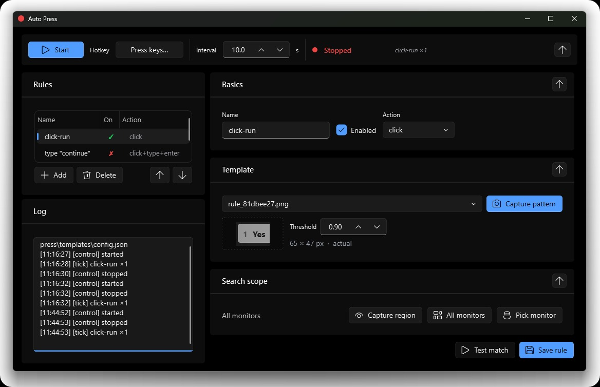

Template-matching automation
Screenshot the button once. CodeAway clicks it whenever it appears — at any DPI, on any monitor, in any chat.
Free · open source · 100% local · no accounts
CodeAway puts your IDE on autopilot. When Cursor stalls, it clicks Continue. When you walk away, your phone holds the leash. So you can — actually — code away from your desk.

Quick start
The installer drops uv, the source, and the deps into
~/codeaway. Nothing leaves your machine — read
the script
first if you'd like.
# 100% local. Installs uv, clones the source, syncs deps. $ powershell -c "irm https://codeaway.org/install.ps1 | iex"
Untested platform. The install script will fetch and sync, but the engine relies on Win32 APIs and won't run as-is on macOS yet.
Sources for the installers: install.ps1 · install.sh. No backend, no telemetry, no credentials.
Features
A handful of small things, each polished. Nothing that asks for your email. Nothing that calls home.
Screenshot the button once. CodeAway clicks it whenever it appears — at any DPI, on any monitor, in any chat.
Watches each Cursor window independently. Knows which one is busy, which is waiting, which just finished.
Install the PWA on your phone. Status, send, scroll, screenshots — all live, all on your tailnet, no account.
Type a reply on the phone. Sends now if the agent is idle, queues for the next idle if it's busy. Edit while it waits.
Every reply turns into a screenshot tile. Tap to expand, swipe to step back through what the agent said while you were gone.
Sits in the system tray. Tray dot turns green when scanning, red when not. Page Down toggles. Wake up to a finished branch.
Everything runs on your machine. No cloud, no API keys, no analytics. Source is on GitHub — read the whole thing in 30 minutes.
Page Down by default. Press the Hotkey button, press anything you like — modifiers included. Saved instantly.
How it works
Drag a rectangle around the button you want clicked. CodeAway saves it as a template — pixel-perfect, scale-aware, DPI-aware.
Pick an action — click, click + Enter, click + send. Optionally type the text it should send. Save.
The tray dot goes green. CodeAway watches your screen and fires the rule whenever the button appears. You can leave the room.
Tell me what's missing
No backend, no email capture, no “we'll be in touch.” Pick the channel you prefer — your text travels with you to whichever one you click.